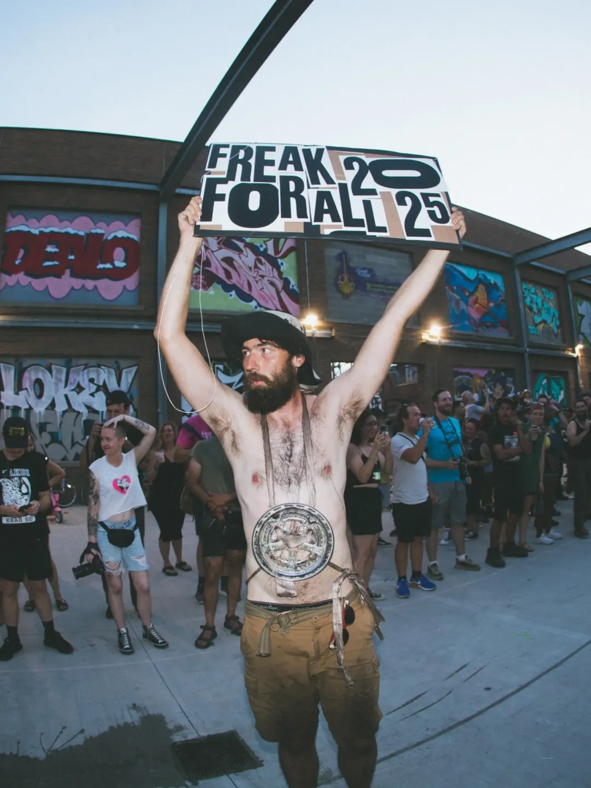
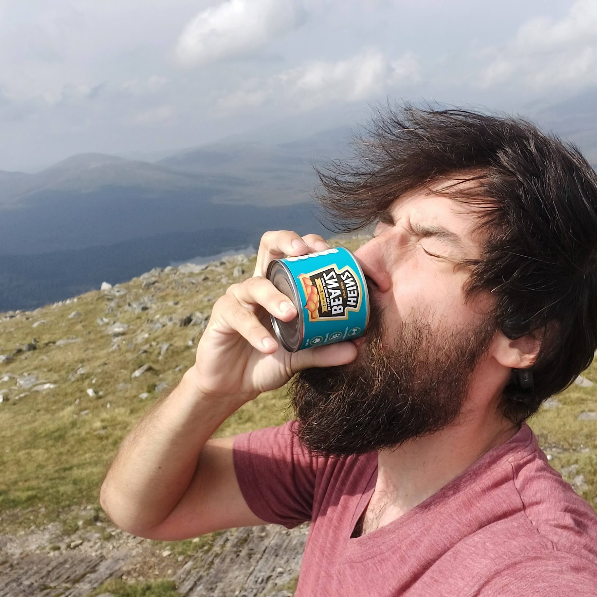

About me

Award Winning* MultiMedia Artist
Hey! I make a lotta random stuff and love trying all sorts of new methods and materials.
I've done some laser cutting, 3d printing, leatherworking, metalworking, woodworking, paper crafting, pen plotting, spray painting, sewing, dumpster diving and more!
*Winning one of 6 awards given among 11 holes for a small pop up putt putt course to benifit a little park in baltimore. Very prestigious

Director - Baltimore Node
I've been a memeber at the Baltimore Node hackerspace for 3 years. I'm a "director" but it doesn't mean much and should probably run for president (at the node) next time around. It's an awesome spot to get projects done and meet creatives and come up with new stuff! Come by 7pm-late on Thursdays at 2106 Lovegrove, Baltimore MD
Setting up my guillotine to cut the node's 15 yr anniversery cake

Member - Rat Watch Baltimore
I've been in love with freakbikes for a few years now, and have met a lot of different bike clubs in other cities who do cool things together. Rat watch is our little club still in its infancy, but hope to find a spot to stash a build up of silly bikes and location to put on some cool events soon. To be a member of Rat Watch you just gotta build a freaky bike, we've got some spare frames around and can weld stuff up at the node plus fix mechanical issues nearby at Velocipede so its easy and cheap to make happen!
Rat watch squad pushes me to victory!

Renowned Socialite
All around Baltimore my name has found its ways, whether in regards to stories of shotgunning bean cans, sneaky watermelons making an apperance at a social bike ride stop or my extrodinarly tasty creme brulee, i'm a kinda a big deal to secure for your social gathering. Please reach out if your formal gathering in the Baltimore area could use a game of musical beans.
Showgirlin the jousting

Hardy Adventurer
Done a decent amount of bike adventures so far- Tall bike tour from NYC->Marquett, MI, lame bike tour from MN->DC, attended a tech summer camp by biking there from Seattle and putzed around the Olympic Penninsula afterward. Love to make my own gear for adventuring and pack minimally.
Beans of victory for hiking up my first Murno
